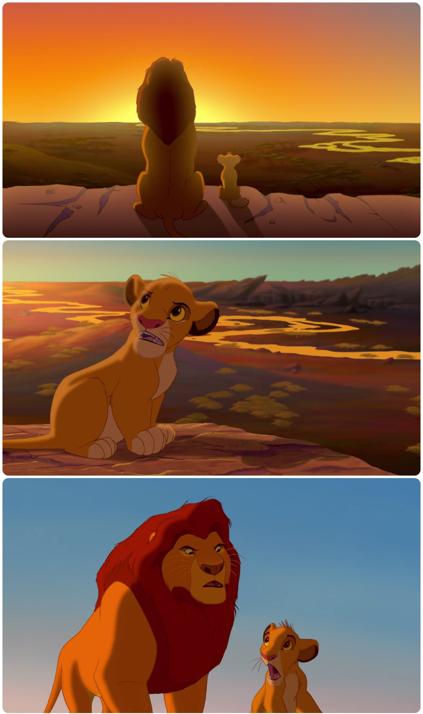

#who_am_i
- Emanuel Fiuza de Oliveira <emfolg@gmail.com>
- #human_30y_plus
- #father_of_a_boy
- #husband_of_a_beautiful_wife
- #works_with_web_for_10y_plus
- #works_with_medica_imaging_for_3y_plus
#motivation
- #advertise_open_source_medical_imaging_projects
- #draw_community_attention_to_medical_imaging
- #make_the_subject_less_obscure
#what_some_think_it_is

#or_this

#what_it_actually_is
#what_is_different
- #acquisition_method
- #file_format_and_storage
Meme
